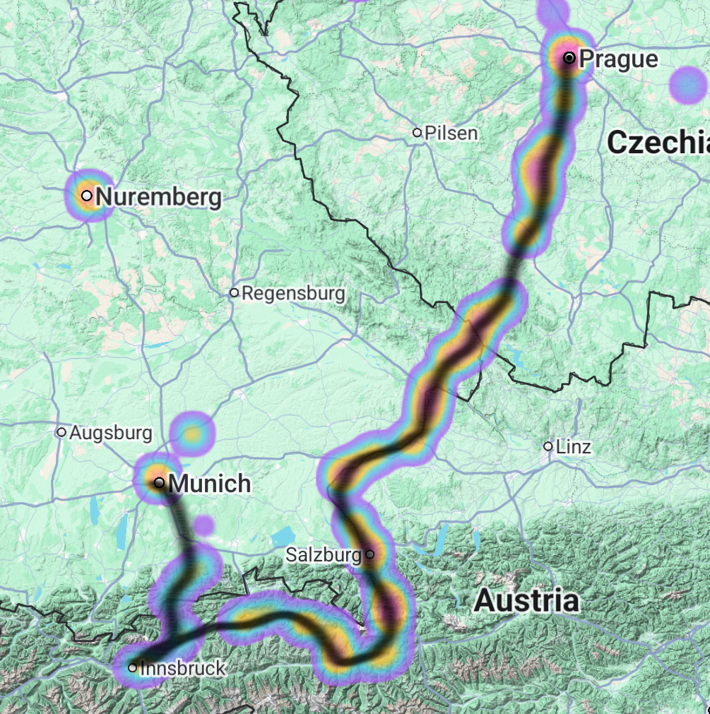
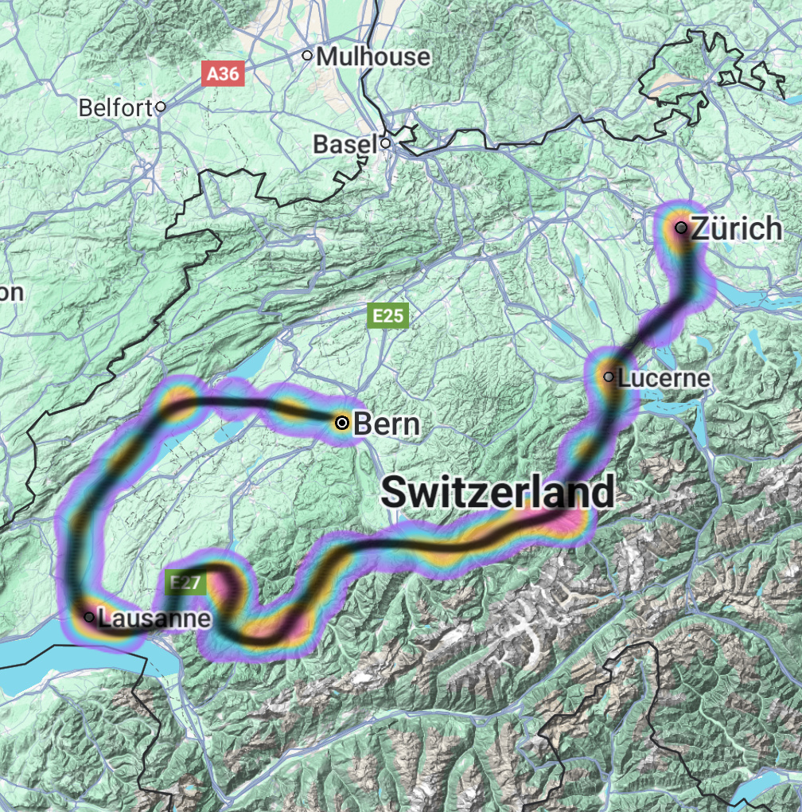

2023 · Czechia / Austria / Germany
Prague to Munich
Our route and ride heatmap across three countries.

03 / Explore
I love cycling and exploring new places, especially together with friends. Recent trips have taken us through Czechia, Austria, Germany and Switzerland, with the Black Forest next.
2023 · Czechia / Austria / Germany
Our route and ride heatmap across three countries.

2024 · Switzerland
Our route and ride heatmap across Switzerland.
